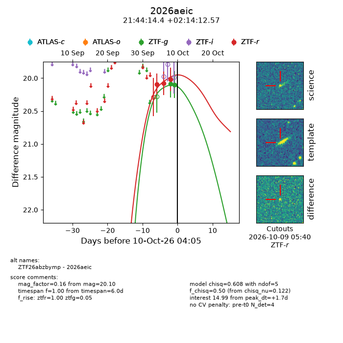
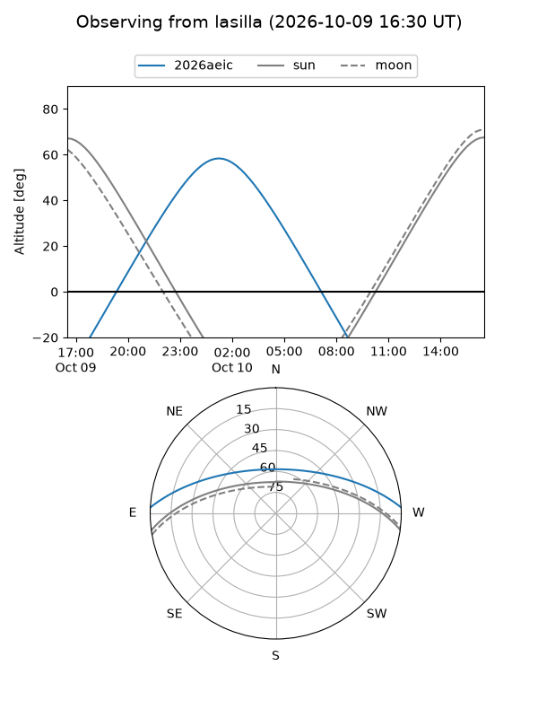
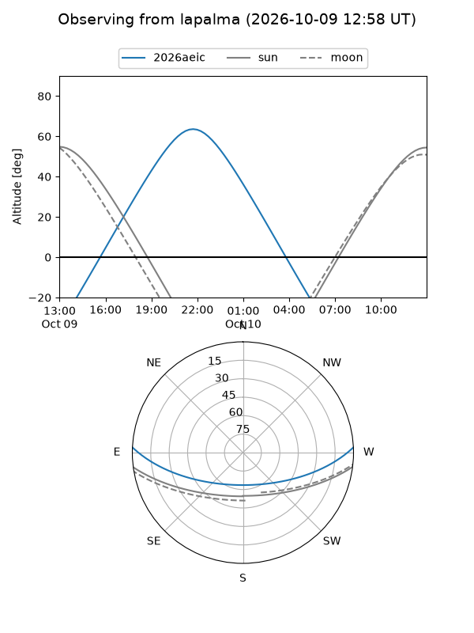
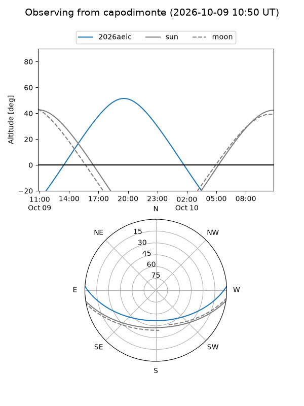
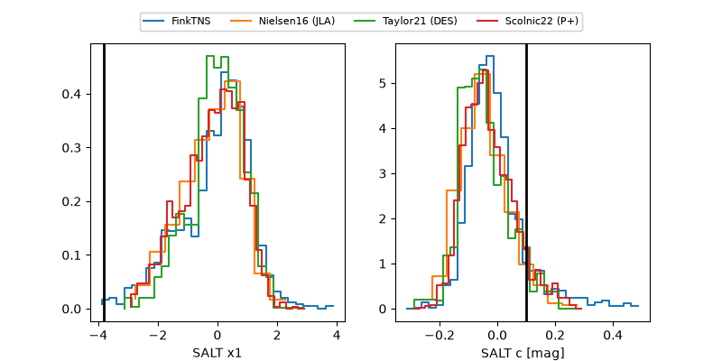

2026aeic
Target 2026aeic at 2026-10-10 04:06
Aliases and brokers:
FINK-ZTF: ztf.fink-portal.org/ZTF26abzbymp
Lasair-ZTF: lasair-ztf.lsst.ac.uk/objects/ZTF26abzbymp
ALeRCE-ZTF: alerce.online/object/ZTF26abzbymp
YSE-PZ: ziggy.ucolick.org/yse/transient_detail/2026aeic
TNS name: wis-tns.org/object/2026aeic
Direct TNS query: direct search
alt names
ZTF26abzbymp (ztf,fink_ztf)
2026aeic (tns,yse)
Coordinates:
equatorial (ra, dec) = 326.0599,+2.23682
equatorial (HMS+DMS) = 21:44:14.38,+02:14:12.57
galactic (l, b) = (58.3813,-36.22676)
Flags:
peak dt: +1.7
Photometry:
last ztfg=20.10, ztfr=20.02
2 ztfg, 3 ztfr detections
Lightcurve

Visibility



Additional plots
